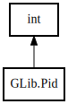

GLib.Pid – glib-2.0 Reference Manual
Packages
glib-2.0
GLib
Pid
FORMAT
Pid
Object Hierarchy:

Description:
[
CCode
( default_value =
"0"
, get_value_function =
"g_value_get_int"
, marshaller_type_name =
"INT"
, set_value_function =
"g_value_set_int"
, type_id =
"G_TYPE_INT"
) ]
[
IntegerType
( rank =
6
) ]
public
struct
Pid
:
int
Namespace:
GLib
Package:
glib-2.0
Content:
Constants:
public
const
unowned
string
FORMAT
Inherited Members:
All known members inherited from struct int
MAX
MIN
abs
clamp
from_big_endian
from_little_endian
from_pointer
max
min
parse
to_big_endian
to_little_endian
to_pointer
to_string